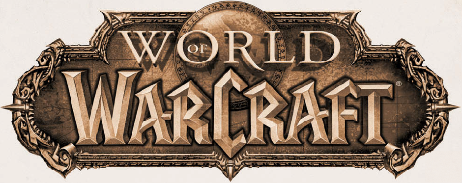

CАЙТ О ВСЕЛЕННОЙ WARCRAFT
Вселенная Warcraft — вселенная, изначально придуманная для компьютерных игр из серии Warcraft (с
англ. — «Военное ремесло»). Позже она также получила развитие в настольных играх, коллекционной карточной
игре, книгах, комиксах, фильмах, различной маркетинговой продукции, такой как фигурки, футболки, коврики для мыши и
т. п. На ежеквартальной основе выходит журнал «World of Warcraft: The Magazine». Как и многие другие
популярные вымышленные вселенные, вселенная Warcraft обогащается за счёт неофициального творчества: комиксов,
видеороликов, в т. ч. полнометражным фильмом «Tales of the Past» в трёх частях, сделанным на движке World
of Warcraft студентом Мартином Фалком.
Вселенная выдержана в стиле фэнтези с примесью стимпанка, европейской культуры и некоторых элементов восточной
культуры. Описывает мир Азерот, включающий в себя Восточные королевства, Калимдор, Нордскол, Пандарию, Расколотые
острова, Зандалар и Кул-Тирас; а также миры Аргус и Дренор. История вселенной Warcraft описывает в основном
противостояние между Альянсом и Ордой и их борьбу с Пылающим Легионом, Плетью, драконом Смертокрылом, Древними
богами и другими силами, угрожающими Азероту.
Художественное содержание:
Вселенная Warcraft включает множество миров, объединённых
хаотической воронкой, которая носит название Круговерть Пустоты. Переход между мирами можно осуществить с помощью
порталов. Описанная история вселенной охватывает более 10 тысячелетий. Первой разумной расой, упоминаемой в
официальной истории вселенной Warcraft, являются титаны — возникшие как «души миров», которые, с целью поиска своих
братьев, упорядочивают миры, пытаясь пробудить в них «душу мира» — своих братьев. Они оберегают упорядоченные ими миры
от многочисленных демонических существ, стремящихся уничтожить жизнь во вселенной. Саргерас — гигант из литой бронзы —
многие тысячи лет уничтожал демонических существ, однако разочаровался в своих братьях и сестрах из-за их
нерешительности во время принятия тяжёлого решения. Чтобы завершить то, что задумал, он обращается к своим врагам —
демоническим сущностям, и, подчинив их волю себе, он создаёт Пылающий Легион, целью которого является очищение Великой
Запредельной Тьмы (аналог Вселенной) от проявлений высшей Тьмы и Повелителей Бездны, абстрактных сущностей с желанием
известить всю Великую Запредельную Тьму. Так начался Пылающий поход.
Миры:
1. Азерот
2. Дренор
3. Аргус
Игры:
Warcraft: Orcs and Humans
Warcraft: Orcs and Humans — стратегия в реальном времени, выпущенная
компанией Blizzard Entertainment в 1994 году для DOS, а позже для Mac OS. Действие игры происходит в мире Азерот.
События, воспроизведённые в игре, относятся к Первой Великой войне (или просто Великой войне) в мире
Warcraft.
Warcraft II
Warcraft Adventures: Lord of the Clans Приключенческая игра во вселенной Warcraft,
отменённая как не соответствующая «высокому стандарту качества игр от Blizzard».
Warcraft III
Warcraft III: The Frozen Throne (2003) Основная статья: Warcraft III: Reign of
Chaos Warcraft III: Reign of Chaos — стратегия в реальном времени, выпущенная в июле 2002 года для платформ Windows и
Mac OS. Первая игра в серии, использующая трёхмерную графику, хотя и с ограниченными возможностями управления камерой.
Одним из основных нововведений стали «герои» — уникальные юниты, накапливающие опыт, получающие новые навыки и
использующие в бою артефакты. В июле 2003 года вышло дополнение The Frozen Throne. Это дополнение можно считать
«открытой» версией игры, в ней стало доступно создание карт, как похожих на стандартные, так и в корне отличающихся от
них. В Reign of Chaos также возможно было изменять карты и уровень героя «без ограничений», «Дополнительно — Игровые
константы».
World of Warcraft
World of Warcraft — массовая многопользовательская онлайн RPG, выпущенная
Blizzard Entertainment в ноябре 2004 года для Windows и Macintosh. На данный момент для игры было выпущено 8
дополнений: The Burning Crusade, вышедшее в 2007 году. В игру были введены новые игровые расы дренеев и эльфов крови
со своими стартовыми зонами, добавлен мир Запределье — остатки Дренора, родного мира орков, стали доступны игрокам
летающие ездовые животные, увеличенный до 70-го лимит уровней и новая профессия — ювелирное дело. Wrath of the Lich
King, вышедшее 13 ноября 2008 года. На этот раз в игру добавили первый героический класс — рыцарь смерти, новый
континент Нордскол, лимит уровней был поднят до 80-го, добавлена система достижений и новая профессия — начертание,
появились PvP-зоны с осадными орудиями. Cataclysm, вышедшее 7 декабря 2010 года. В нём был изменён первоначальный
облик Азерота, добавлены две новые игровые расы — воргены и гоблины, введена новая вспомогательная профессия —
археология, игроки смогли летать на собственных средствах перемещение в Азероте, а также поднят лимит уровней до
85-го. Mists of Pandaria, вышедшее 25 сентября 2012 года. В нём добавлена новая раса пандаренов, доступных для обеих
фракций, добавлен новый континент Пандария, появился новый класс монах, лимит уровней поднят до 90-го. Warlords of
Draenor, вышедшее 13 ноября 2014 года. Добавлен новый мир — Дренор из альтернативной реальности, лимит уровней поднят
до 100-го. Legion, вышедшее 30 августа 2016 года. В игру был введён второй героический класс — охотник на демонов,
максимальный уровень игрока был увеличен до 110-го. Добавлены континент Расколотые острова и мир Аргус. Также в игру
были введены артефакты — оружие, уникальное для каждой классовой специализации. Battle for Azeroth, вышедшее 14
августа 2018 года. Дополнение посвящено полномасштабной войне между Альянсом и Ордой. Повышен максимальный уровень
персонажей до 120-го, добавлены новые континенты Зандалар и Кул-Тирас, а также союзные расы — разновидности уже
имеющихся игровых рас. Shadowlands, вышедшее 24 ноября 2020 года. События дополнения разворачиваются в загробном мире
World of Warcraft — Тёмных Землях. Максимальный уровень сокращён со 120 до 60, а также добавлено бесконечное
процедурно генерируемое подземелье.
Книги:
Warcraft: Месть орков — Автор: Ричард А. Кнаак (2001). В конце Второй войны маг Ронин
отправляется в земли Каз Модана, где орки смогли взять под свой контроль красных драконов и направить их против других
рас Азерота.
Warcraft: Повелитель кланов — Автор: Кристи Голден (2001). Сюжет книги должен был стать
основой одноимённой игры. Книга рассказывает о Тралле — орке, который, сбежав из рабства, впоследствии становится
вождём Орды.
Warcraft: Of Blood and Honor — Автор: Крис Метзен, один из создателей вселенной Warcraft
(2001). Главный герой книги — паладин Тирион Фордринг оказывается спасён орком, представителем расы, которую Тирион
считает жестокой и порочной, что заставляет паладина поменять его взгляды на жизнь.
Warcraft: Последний Страж — Автор: Джефф Грабб (2001). Книга рассказывает о Медиве,
величайшем маге ордена хранителей Тирисфаля, борющегося против Пылающего Легиона.
Warcraft: Трилогия: Война Древних — Автор: Ричард А. Кнаак (2004—2006). Трилогия о первом
вторжении Пылающего Легиона в Азерот.
1. Источник Вечности.
2. Душа Демона.
3. Раскол.
Warcraft: Трилогия Солнечного Колодца — комикс в трёх частях, нарисованный Чже Хван Кимом по
сюжету писателя Ричарда А. Кнаака (2005—2006). Синий дракон Кэйлек по поручению лидера синих драконов Малигоса
пытается найти солнечный источник (источник энергии эльфов Кель’Таласа), пропавший во время Третьей войны.
World of Warcraft: Круг ненависти — Автор: Кейт Р. А. ДеКандидо (2006). Участившиеся
нападения на земли Дуротара говорят, что люди хотят возобновить войну с орками. Теперь Джайна и Тралл должны
предотвратить беду прежде, чем старая ненависть вспыхнет с новой силой, иначе Калимдор погрузится в ещё одну
кровопролитную войну.
World of Warcraft: Восхождение Орды — Автор: Кристи Голден (2006). Книга повествует о том,
как Кил’джеден привёл в движение череду событий, в результате которого дренеи были практически изничтожены, а кланы
орков объединились в единую непобедимую и безжалостную силу разрушения.
World of Warcraft: Потоки Тьмы — Автор: Аарон С. Розенберг (2007). События книги
разворачиваются в сюжетных линиях одноимённой игры. Альянс и потоки тьмы Орды, которые вторглись в Азерот, вновь
сражаются за планету.
World of Warcraft: По ту сторону Тёмного Портала — Авторы: Аарон С. Розенберг и Кристи
Голден (2008). Орк-шаман Нер’зул становится вождём Орды и открывает Тёмный Портал. Армия Альянса проникает в Дренор
для уничтожения жестокой расы орков.
World of Warcraft: Ночь дракона — Автор: Ричард А. Кнаак (2008). В Грим Батоле вновь
пробудилось зло. Супруг королевы драконов Алекстразы, Кориалстраз, вновь берётся за спасение мира. Вместе с магом
Ронином и Верисой Ветрокрылой он спускается в жуткие пещеры Грим Батола.
World of Warcraft: Артас: Возвышение Короля-лича — Автор: Кристи Голден (2009). Роман
рассказывает о жизни Артаса Менетила, об отношениях с очаровательной волшебницей Джайной Праудмур и об ужасной судьбе
молодого принца.
World of Warcraft: Ярость Бури — Автор: Ричард А. Кнаак (2010). Главный герой книги ночной
эльф-друид Малфурион Ярость Бури пытается распутать тайны Изумрудного Кошмара, ужасного уголка в Изумрудном Сне,
который сводит существ с ума.
World of Warcraft: Раскол: Прелюдия к Катаклизму — Автор: Кристи Голден (2010). Сюжет книги
описывает события, происходящие перед Катаклизмом.
World of Warcraft: Тралл: Сумерки Аспектов — Автор: Кристи Голден (2011). Изера — Аспект
зелёных драконов просит Тралла о помощи. Бывший вождь Орды, ныне шаман Служителей Земли пытается помочь четырём
Аспектам и сделать их единым целым для борьбы с ужасным драконом — Хромагусом.
World of Warcraft: Волчье сердце — Автор: Ричард А. Кнаак (2011). Сюжет разворачивается
вокруг королевства воргенов Гилнеасе и короле Генне Седогриве.
World of Warcraft: Джайна Праудмур: Приливы войны — Автор: Кристи Голден (2012). Знаменитая
волшебница Джайна Праудмур продолжает свои давние попытки наладить отношения между Ордой и Альянсом. Но нарастающие
разногласия приближают две стороны к открытой войне, которая грозит уничтожить появившийся хрупкий союз.
World of Warcraft: Вол’джин: Тени Орды — Автор: Майкл Стакпол (2013). Вол’джин — храбрый
тёмный охотник и лидер племени Тёмного Копья, благодаря своим хитрости и уму он стал верным союзником для бывшего
вождя Тралла. Но сейчас Тени Орды преследуют Вол’джина вплоть до затерянного континента Пандарии. Именно там будет
испытана преданность вожака троллей, когда член его же фракции попытается его убить…
World of Warcraft: Иллидан — Автор: Уильям Кинг (2016). Охота Майев Песнь Теней за
Иллиданом, отношения Иллидана с Пылающим Легионом, раскрытие истинных мотивов Иллидана в захвате Запределья, появление
иллидари.
World of Warcraft: Варкрафт: Хроники. Энциклопедия в трёх томах:
Том 1 — Автор: Крис
Метцен, Мэтт Бернс, Роберт Брукс (2016). Большая энциклопедия, описывающая историю зарождения вселенной и Азерота в
частности вплоть до открытия Тёмного Портала.
Том 2 — Автор: Крис Метцен, Мэтт Бернс, Роберт Брукс (2017).
История про гибель Дренора, Орду и Альянс.
Том 3 — Автор: Крис Метцен, Мэтт Бернс, Роберт Брукс (2018).
Повествует о Третьей войне и переходит к событиям классического World of Warcraft. Основной материал книги
ориентирован на Warcraft III.
World of Warcraft: Перед бурей — Автор: Кристи Голден (2018). События происходят после
кульминации сюжета обновления «Тени Аргуса». Эта история расскажет о том, что ожидает героев Орды и Альянса после их
противостояния Пылающему Легиону.
World of Warcraft: Shadows Rising — Автор: Ру Мэделин (2020). События, участниками которых
станут желающие спасти Бвонсамди Зекхан и Таланджи, позволят им обрести себя и сплотить силы Орды в преддверии схватки
с тьмой.
Фильмы:
В мае 2006 года компания Legendary Pictures приобрела право на съёмку фильма
по мотивам серии Warcraft. Legendary Pictures должна была работать над этим проектом совместно с Blizzard. Место
режиссёра фильма некоторое время занимал Сэм Рэйми, но в 2013 году его сменил Данкан Джонс. Фильм посвящен первому
столкновению между людьми и орками, то есть событиям игры Warcraft: Orcs & Humans, при этом включая в себя и
персонажей из Warcraft II: Tides of Darkness и показывая обе стороны конфликта — Альянс и Орду — как героев, не
отдавая предпочтения какой-то одной стороне. Главные роли в фильме сыграли Трэвис Фиммел (командующий Андуин Лотар),
Бен Фостер (Медив) и Тоби Кеббелл (Дуротан). Съёмки проходили с января по май 2014 года, а выход фильма на экраны
состоялся 25 мая 2016 года. Фильм получил в англоязычной прессе преимущественно негативные отзывы; он провалился в
североамериканском прокате, хотя и смог избежать полного провала за счет высоких сборов в других странах, в первую
очередь Китае.